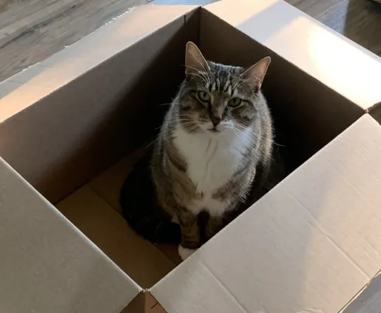
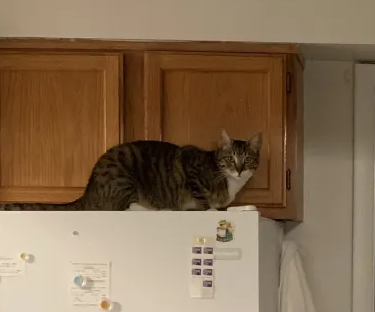
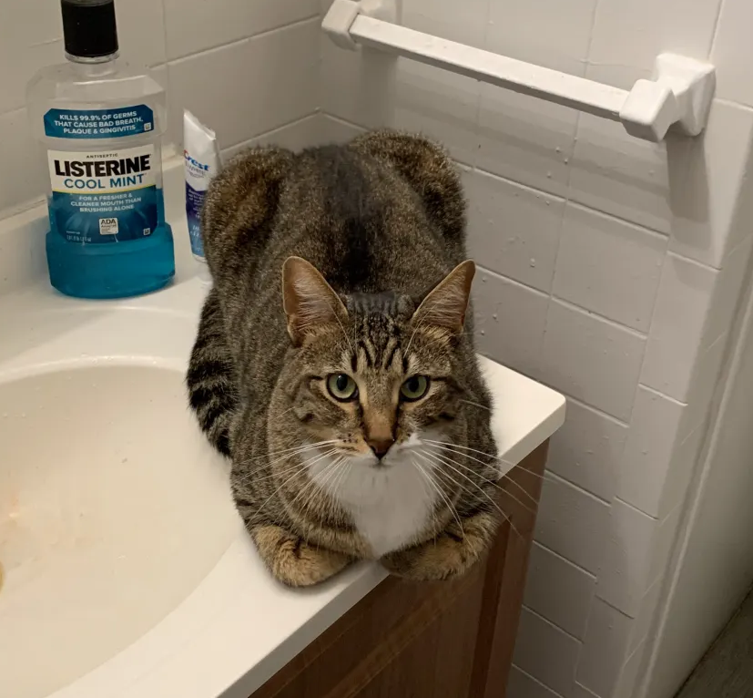
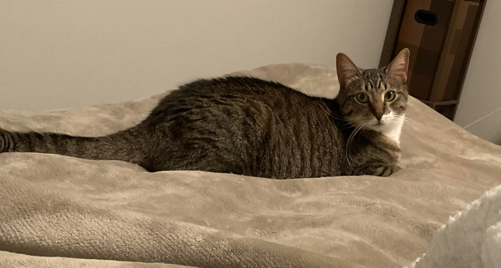
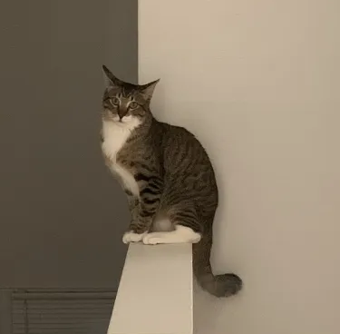

Cat Gallery




The most skittish cat
Meet this beautiful 2 year old tabby. Moe has been my beloved pet and a proud family member since late 2023. He traveled here all the way from Texas.
Moe has a distinct M on his forehead which all tabby cats normally have. Tabby fur pattern is pretty popular and you can quickly spot one by their well pronounced stripes or spots. Many tabbies are known to be very playful, loving, and intelligent.
Unlike many cats I have met so far, Moe is very skittish. He gets scared so easily that when somebody comes down the staircase this cat starts running! If someone would sneeze, move their foot, chair, anything. Moe is quite a funny cat!